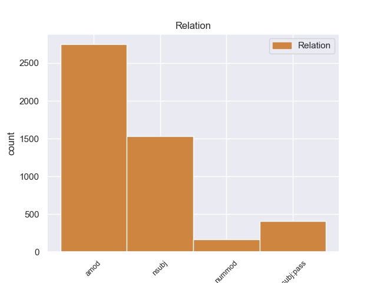
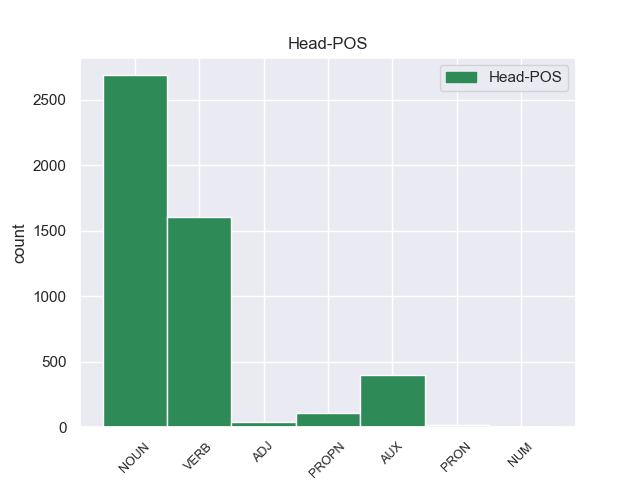
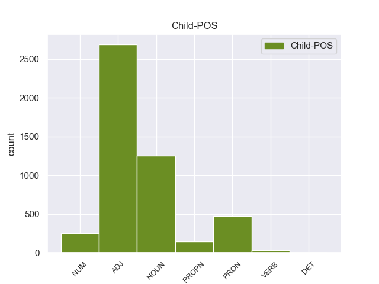

Distribution of features within this leaf



Agreement Rules sorted by frequency.
- When the dependent token is the adjectival modifier(amod) of the head token, and the head token is NOUN
1 Αυτό _ _ _ _ 0 _ _ _
2 μπορεί _ _ _ _ 0 _ _ _
3 να _ _ _ _ 0 _ _ _
4 μην _ _ _ _ 0 _ _ _
5 οδηγήσει _ _ _ _ 0 _ _ _
6 σ _ _ _ _ 0 _ _ _
7 τη _ _ _ _ 0 _ _ _
8 λήξη _ _ _ _ 0 _ _ _
9 του _ _ _ _ 0 _ _ _
10 εν _ _ _ _ 0 _ _ _
11 λόγω _ _ _ _ 0 _ _ _
12 ζητήματος _ _ _ _ 0 _ _ _
13 αλλά _ _ _ _ 0 _ _ _
14 , _ _ _ _ 0 _ _ _
15 σ _ _ _ _ 0 _ _ _
16 τη _ _ _ _ 0 _ _ _
17 μορφή _ _ _ _ 0 _ _ _
18 υπό _ _ _ _ 0 _ _ _
19 την _ _ _ _ 0 _ _ _
20 οποία _ _ _ _ 0 _ _ _
21 την _ _ _ _ 0 _ _ _
22 λάβαμε _ _ _ _ 0 _ _ _
23 , _ _ _ _ 0 _ _ _
24 αυτή _ _ _ _ 0 _ _ _
25 η _ _ _ _ 0 _ _ _
26 αίτηση _ _ _ _ 0 _ _ _
27 άρσης _ _ _ _ 0 _ _ _
28 της _ _ _ _ 0 _ _ _
29 ασυλίας _ _ _ _ 0 _ _ _
30 ήταν _ _ _ _ 0 _ _ _
31 , _ _ _ _ 0 _ _ _
32 κατά _ _ _ _ 0 _ _ _
33 την _ _ _ _ 0 _ _ _
34 άποψη _ _ _ _ 0 _ _ _
35 της _ _ _ _ 0 _ _ _
36 Επιτροπής _ _ _ _ 0 _ _ _
37 Νομικών νομικός ADJ ADJ Case=Gen|Gender=Neut|Number=Plur 38 amod _ _
38 Θεμάτων θέμα NOUN NOUN Case=Gen|Gender=Neut|Number=Plur 0 _ _ _
39 , _ _ _ _ 0 _ _ _
40 απαράδεκτη _ _ _ _ 0 _ _ _
41 , _ _ _ _ 0 _ _ _
42 άποψη _ _ _ _ 0 _ _ _
43 την _ _ _ _ 0 _ _ _
44 οποία _ _ _ _ 0 _ _ _
45 συνιστώ _ _ _ _ 0 _ _ _
46 σ _ _ _ _ 0 _ _ _
47 το _ _ _ _ 0 _ _ _
48 Σώμα _ _ _ _ 0 _ _ _
49 να _ _ _ _ 0 _ _ _
50 υιοθετήσει _ _ _ _ 0 _ _ _
51 . _ _ _ _ 0 _ _ _
1 Αυτό αυτός PRON PRON Case=Nom|Gender=Neut|Number=Sing|Person=3|PronType=Dem 2 nsubj _ _
2 μπορεί μπορώ VERB VERB Aspect=Imp|Mood=Ind|Number=Sing|Person=3|Tense=Pres|VerbForm=Fin|Voice=Act 0 _ _ _
3 να _ _ _ _ 0 _ _ _
4 μην _ _ _ _ 0 _ _ _
5 οδηγήσει _ _ _ _ 0 _ _ _
6 σ _ _ _ _ 0 _ _ _
7 τη _ _ _ _ 0 _ _ _
8 λήξη _ _ _ _ 0 _ _ _
9 του _ _ _ _ 0 _ _ _
10 εν _ _ _ _ 0 _ _ _
11 λόγω _ _ _ _ 0 _ _ _
12 ζητήματος _ _ _ _ 0 _ _ _
13 αλλά _ _ _ _ 0 _ _ _
14 , _ _ _ _ 0 _ _ _
15 σ _ _ _ _ 0 _ _ _
16 τη _ _ _ _ 0 _ _ _
17 μορφή _ _ _ _ 0 _ _ _
18 υπό _ _ _ _ 0 _ _ _
19 την _ _ _ _ 0 _ _ _
20 οποία _ _ _ _ 0 _ _ _
21 την _ _ _ _ 0 _ _ _
22 λάβαμε _ _ _ _ 0 _ _ _
23 , _ _ _ _ 0 _ _ _
24 αυτή _ _ _ _ 0 _ _ _
25 η _ _ _ _ 0 _ _ _
26 αίτηση _ _ _ _ 0 _ _ _
27 άρσης _ _ _ _ 0 _ _ _
28 της _ _ _ _ 0 _ _ _
29 ασυλίας _ _ _ _ 0 _ _ _
30 ήταν _ _ _ _ 0 _ _ _
31 , _ _ _ _ 0 _ _ _
32 κατά _ _ _ _ 0 _ _ _
33 την _ _ _ _ 0 _ _ _
34 άποψη _ _ _ _ 0 _ _ _
35 της _ _ _ _ 0 _ _ _
36 Επιτροπής _ _ _ _ 0 _ _ _
37 Νομικών _ _ _ _ 0 _ _ _
38 Θεμάτων _ _ _ _ 0 _ _ _
39 , _ _ _ _ 0 _ _ _
40 απαράδεκτη _ _ _ _ 0 _ _ _
41 , _ _ _ _ 0 _ _ _
42 άποψη _ _ _ _ 0 _ _ _
43 την _ _ _ _ 0 _ _ _
44 οποία _ _ _ _ 0 _ _ _
45 συνιστώ _ _ _ _ 0 _ _ _
46 σ _ _ _ _ 0 _ _ _
47 το _ _ _ _ 0 _ _ _
48 Σώμα _ _ _ _ 0 _ _ _
49 να _ _ _ _ 0 _ _ _
50 υιοθετήσει _ _ _ _ 0 _ _ _
51 . _ _ _ _ 0 _ _ _
1 πρόκειται _ _ _ _ 0 _ _ _
2 για _ _ _ _ 0 _ _ _
3 αυτό _ _ _ _ 0 _ _ _
4 το _ _ _ _ 0 _ _ _
5 οποίο _ _ _ _ 0 _ _ _
6 αποκαλύφθηκε _ _ _ _ 0 _ _ _
7 κατά _ _ _ _ 0 _ _ _
8 τη _ _ _ _ 0 _ _ _
9 διάρκεια _ _ _ _ 0 _ _ _
10 αυτής _ _ _ _ 0 _ _ _
11 της _ _ _ _ 0 _ _ _
12 διαδικασίας _ _ _ _ 0 _ _ _
13 , _ _ _ _ 0 _ _ _
14 ότι _ _ _ _ 0 _ _ _
15 ο _ _ _ _ 0 _ _ _
16 Εισαγγελέας _ _ _ _ 0 _ _ _
17 κάποια _ _ _ _ 0 _ _ _
18 στιγμή _ _ _ _ 0 _ _ _
19 ζήτησε _ _ _ _ 0 _ _ _
20 από _ _ _ _ 0 _ _ _
21 την _ _ _ _ 0 _ _ _
22 Πρόεδρο _ _ _ _ 0 _ _ _
23 του _ _ _ _ 0 _ _ _
24 Σώματος _ _ _ _ 0 _ _ _
25 , _ _ _ _ 0 _ _ _
26 την _ _ _ _ 0 _ _ _
27 προκάτοχό _ _ _ _ 0 _ _ _
28 σας _ _ _ _ 0 _ _ _
29 , _ _ _ _ 0 _ _ _
30 λεπτομέρειες _ _ _ _ 0 _ _ _
31 για _ _ _ _ 0 _ _ _
32 την _ _ _ _ 0 _ _ _
33 ψήφο _ _ _ _ 0 _ _ _
34 που _ _ _ _ 0 _ _ _
35 έχουν _ _ _ _ 0 _ _ _
36 δώσει _ _ _ _ 0 _ _ _
37 οι _ _ _ _ 0 _ _ _
38 δύο _ _ _ _ 0 _ _ _
39 συγκεκριμένοι _ _ _ _ 0 _ _ _
40 βουλευτές _ _ _ _ 0 _ _ _
41 προκειμένου _ _ _ _ 0 _ _ _
42 να _ _ _ _ 0 _ _ _
43 διευκρινιστεί διευκρινίζω VERB VERB Aspect=Perf|Mood=Ind|Number=Sing|Person=3|VerbForm=Fin|Voice=Pass 0 _ _ _
44 περαιτέρω _ _ _ _ 0 _ _ _
45 η _ _ _ _ 0 _ _ _
46 πιθανότητα πιθανότητα NOUN NOUN Case=Nom|Gender=Fem|Number=Sing 43 nsubj:pass _ _
47 να _ _ _ _ 0 _ _ _
48 είχαν _ _ _ _ 0 _ _ _
49 ασκήσει _ _ _ _ 0 _ _ _
50 αθέμιτη _ _ _ _ 0 _ _ _
51 επιρροή _ _ _ _ 0 _ _ _
52 . _ _ _ _ 0 _ _ _
1 Αυτό _ _ _ _ 0 _ _ _
2 μπορεί _ _ _ _ 0 _ _ _
3 να _ _ _ _ 0 _ _ _
4 μην _ _ _ _ 0 _ _ _
5 οδηγήσει _ _ _ _ 0 _ _ _
6 σ _ _ _ _ 0 _ _ _
7 τη _ _ _ _ 0 _ _ _
8 λήξη _ _ _ _ 0 _ _ _
9 του _ _ _ _ 0 _ _ _
10 εν _ _ _ _ 0 _ _ _
11 λόγω _ _ _ _ 0 _ _ _
12 ζητήματος _ _ _ _ 0 _ _ _
13 αλλά _ _ _ _ 0 _ _ _
14 , _ _ _ _ 0 _ _ _
15 σ _ _ _ _ 0 _ _ _
16 τη _ _ _ _ 0 _ _ _
17 μορφή _ _ _ _ 0 _ _ _
18 υπό _ _ _ _ 0 _ _ _
19 την _ _ _ _ 0 _ _ _
20 οποία _ _ _ _ 0 _ _ _
21 την _ _ _ _ 0 _ _ _
22 λάβαμε _ _ _ _ 0 _ _ _
23 , _ _ _ _ 0 _ _ _
24 αυτή _ _ _ _ 0 _ _ _
25 η _ _ _ _ 0 _ _ _
26 αίτηση αίτηση NOUN NOUN Case=Nom|Gender=Fem|Number=Sing 30 nsubj _ _
27 άρσης _ _ _ _ 0 _ _ _
28 της _ _ _ _ 0 _ _ _
29 ασυλίας _ _ _ _ 0 _ _ _
30 ήταν είμαι AUX AUX Aspect=Imp|Mood=Ind|Number=Sing|Person=3|Tense=Past|VerbForm=Fin|Voice=Pass 0 _ _ _
31 , _ _ _ _ 0 _ _ _
32 κατά _ _ _ _ 0 _ _ _
33 την _ _ _ _ 0 _ _ _
34 άποψη _ _ _ _ 0 _ _ _
35 της _ _ _ _ 0 _ _ _
36 Επιτροπής _ _ _ _ 0 _ _ _
37 Νομικών _ _ _ _ 0 _ _ _
38 Θεμάτων _ _ _ _ 0 _ _ _
39 , _ _ _ _ 0 _ _ _
40 απαράδεκτη _ _ _ _ 0 _ _ _
41 , _ _ _ _ 0 _ _ _
42 άποψη _ _ _ _ 0 _ _ _
43 την _ _ _ _ 0 _ _ _
44 οποία _ _ _ _ 0 _ _ _
45 συνιστώ _ _ _ _ 0 _ _ _
46 σ _ _ _ _ 0 _ _ _
47 το _ _ _ _ 0 _ _ _
48 Σώμα _ _ _ _ 0 _ _ _
49 να _ _ _ _ 0 _ _ _
50 υιοθετήσει _ _ _ _ 0 _ _ _
51 . _ _ _ _ 0 _ _ _
1 πρόκειται _ _ _ _ 0 _ _ _
2 για _ _ _ _ 0 _ _ _
3 αυτό _ _ _ _ 0 _ _ _
4 το _ _ _ _ 0 _ _ _
5 οποίο _ _ _ _ 0 _ _ _
6 αποκαλύφθηκε _ _ _ _ 0 _ _ _
7 κατά _ _ _ _ 0 _ _ _
8 τη _ _ _ _ 0 _ _ _
9 διάρκεια _ _ _ _ 0 _ _ _
10 αυτής _ _ _ _ 0 _ _ _
11 της _ _ _ _ 0 _ _ _
12 διαδικασίας _ _ _ _ 0 _ _ _
13 , _ _ _ _ 0 _ _ _
14 ότι _ _ _ _ 0 _ _ _
15 ο _ _ _ _ 0 _ _ _
16 Εισαγγελέας _ _ _ _ 0 _ _ _
17 κάποια _ _ _ _ 0 _ _ _
18 στιγμή _ _ _ _ 0 _ _ _
19 ζήτησε _ _ _ _ 0 _ _ _
20 από _ _ _ _ 0 _ _ _
21 την _ _ _ _ 0 _ _ _
22 Πρόεδρο _ _ _ _ 0 _ _ _
23 του _ _ _ _ 0 _ _ _
24 Σώματος _ _ _ _ 0 _ _ _
25 , _ _ _ _ 0 _ _ _
26 την _ _ _ _ 0 _ _ _
27 προκάτοχό _ _ _ _ 0 _ _ _
28 σας _ _ _ _ 0 _ _ _
29 , _ _ _ _ 0 _ _ _
30 λεπτομέρειες _ _ _ _ 0 _ _ _
31 για _ _ _ _ 0 _ _ _
32 την _ _ _ _ 0 _ _ _
33 ψήφο _ _ _ _ 0 _ _ _
34 που _ _ _ _ 0 _ _ _
35 έχουν _ _ _ _ 0 _ _ _
36 δώσει _ _ _ _ 0 _ _ _
37 οι _ _ _ _ 0 _ _ _
38 δύο δύο NUM NUM Case=Nom|Gender=Masc|Number=Plur|NumType=Card 40 nummod _ _
39 συγκεκριμένοι _ _ _ _ 0 _ _ _
40 βουλευτές βουλευτής NOUN NOUN Case=Nom|Gender=Masc|Number=Plur 0 _ _ _
41 προκειμένου _ _ _ _ 0 _ _ _
42 να _ _ _ _ 0 _ _ _
43 διευκρινιστεί _ _ _ _ 0 _ _ _
44 περαιτέρω _ _ _ _ 0 _ _ _
45 η _ _ _ _ 0 _ _ _
46 πιθανότητα _ _ _ _ 0 _ _ _
47 να _ _ _ _ 0 _ _ _
48 είχαν _ _ _ _ 0 _ _ _
49 ασκήσει _ _ _ _ 0 _ _ _
50 αθέμιτη _ _ _ _ 0 _ _ _
51 επιρροή _ _ _ _ 0 _ _ _
52 . _ _ _ _ 0 _ _ _
1 Χθες _ _ _ _ 0 _ _ _
2 , _ _ _ _ 0 _ _ _
3 η _ _ _ _ 0 _ _ _
4 Μπενφίκα _ _ _ _ 0 _ _ _
5 νίκησε _ _ _ _ 0 _ _ _
6 την _ _ _ _ 0 _ _ _
7 Ζενίτ _ _ _ _ 0 _ _ _
8 Αγίας άγιος ADJ ADJ Case=Gen|Gender=Fem|Number=Sing 9 amod _ _
9 Πετρούπολης Πετρούπολη PROPN PROPN Case=Gen|Gender=Fem|Number=Sing 0 _ _ _
10 με _ _ _ _ 0 _ _ _
11 σκορ _ _ _ _ 0 _ _ _
12 2:0 _ _ _ _ 0 _ _ _
13 , _ _ _ _ 0 _ _ _
14 κατά _ _ _ _ 0 _ _ _
15 τη _ _ _ _ 0 _ _ _
16 διάρκεια _ _ _ _ 0 _ _ _
17 του _ _ _ _ 0 _ _ _
18 επαναληπτικού _ _ _ _ 0 _ _ _
19 αγώνα _ _ _ _ 0 _ _ _
20 σ _ _ _ _ 0 _ _ _
21 τη _ _ _ _ 0 _ _ _
22 φάση _ _ _ _ 0 _ _ _
23 των _ _ _ _ 0 _ _ _
24 16 _ _ _ _ 0 _ _ _
25 του _ _ _ _ 0 _ _ _
26 Τσάμπιονς _ _ _ _ 0 _ _ _
27 Λιγκ _ _ _ _ 0 _ _ _
28 2011-2012 _ _ _ _ 0 _ _ _
29 . _ _ _ _ 0 _ _ _
1 Αυτή _ _ _ _ 0 _ _ _
2 δεν _ _ _ _ 0 _ _ _
3 ήταν είμαι AUX AUX Aspect=Imp|Mood=Ind|Number=Sing|Person=3|Tense=Past|VerbForm=Fin|Voice=Pass 0 _ _ _
4 η _ _ _ _ 0 _ _ _
5 πρώτη πρώτος NUM NUM Case=Nom|Gender=Fem|Number=Sing|NumType=Ord 3 amod _ _
6 σύλληψη _ _ _ _ 0 _ _ _
7 του _ _ _ _ 0 _ _ _
8 Ουνταλτσόφ _ _ _ _ 0 _ _ _
9 , _ _ _ _ 0 _ _ _
10 ο _ _ _ _ 0 _ _ _
11 οποίος _ _ _ _ 0 _ _ _
12 βρέθηκε _ _ _ _ 0 _ _ _
13 αρκετές _ _ _ _ 0 _ _ _
14 φορές _ _ _ _ 0 _ _ _
15 σ _ _ _ _ 0 _ _ _
16 τη _ _ _ _ 0 _ _ _
17 φυλακή _ _ _ _ 0 _ _ _
18 και _ _ _ _ 0 _ _ _
19 το _ _ _ _ 0 _ _ _
20 2011 _ _ _ _ 0 _ _ _
21 . _ _ _ _ 0 _ _ _
1 Ο _ _ _ _ 0 _ _ _
2 ηγέτης _ _ _ _ 0 _ _ _
3 του _ _ _ _ 0 _ _ _
4 Μετώπου _ _ _ _ 0 _ _ _
5 της _ _ _ _ 0 _ _ _
6 Αριστεράς _ _ _ _ 0 _ _ _
7 , _ _ _ _ 0 _ _ _
8 Σεργκέι _ _ _ _ 0 _ _ _
9 Ουνταλτσόφ _ _ _ _ 0 _ _ _
10 , _ _ _ _ 0 _ _ _
11 ο _ _ _ _ 0 _ _ _
12 οποίος οποίος PRON PRON Case=Nom|Gender=Masc|Number=Sing|Person=3|PronType=Rel 13 nsubj:pass _ _
13 είχε έχω AUX AUX Aspect=Imp|Mood=Ind|Number=Sing|Person=3|Tense=Past|VerbForm=Fin|Voice=Act 0 _ _ _
14 συλληφθεί _ _ _ _ 0 _ _ _
15 κατά _ _ _ _ 0 _ _ _
16 τη _ _ _ _ 0 _ _ _
17 διάρκεια _ _ _ _ 0 _ _ _
18 αντικυβερνητικών _ _ _ _ 0 _ _ _
19 διαδηλώσεων _ _ _ _ 0 _ _ _
20 , _ _ _ _ 0 _ _ _
21 αφέθηκε _ _ _ _ 0 _ _ _
22 ελεύθερος _ _ _ _ 0 _ _ _
23 με _ _ _ _ 0 _ _ _
24 πρόστιμο _ _ _ _ 0 _ _ _
25 χίλιων _ _ _ _ 0 _ _ _
26 ρούβλιων _ _ _ _ 0 _ _ _
27 . _ _ _ _ 0 _ _ _
1 Η _ _ _ _ 0 _ _ _
2 επανάσταση _ _ _ _ 0 _ _ _
3 οδήγησε _ _ _ _ 0 _ _ _
4 σ _ _ _ _ 0 _ _ _
5 τον _ _ _ _ 0 _ _ _
6 άτυχο _ _ _ _ 0 _ _ _
7 Ελληνοτουρκικό _ _ _ _ 0 _ _ _
8 πόλεμο _ _ _ _ 0 _ _ _
9 του _ _ _ _ 0 _ _ _
10 1897 _ _ _ _ 0 _ _ _
11 κατά _ _ _ _ 0 _ _ _
12 τον _ _ _ _ 0 _ _ _
13 οποίο _ _ _ _ 0 _ _ _
14 τα _ _ _ _ 0 _ _ _
15 τουρκικά _ _ _ _ 0 _ _ _
16 στρατεύματα _ _ _ _ 0 _ _ _
17 νίκησαν _ _ _ _ 0 _ _ _
18 κατά _ _ _ _ 0 _ _ _
19 κράτος _ _ _ _ 0 _ _ _
20 τα _ _ _ _ 0 _ _ _
21 αντίστοιχα αντίστοιχος ADJ ADJ Case=Acc|Gender=Neut|Number=Plur 22 amod _ _
22 ελληνικά ελληνικός ADJ ADJ Case=Acc|Gender=Neut|Number=Plur 0 _ _ _
23 σ _ _ _ _ 0 _ _ _
24 το _ _ _ _ 0 _ _ _
25 Θεσσαλικό _ _ _ _ 0 _ _ _
26 μέτωπο _ _ _ _ 0 _ _ _
27 . _ _ _ _ 0 _ _ _
1 Ακούγοντας _ _ _ _ 0 _ _ _
2 τα _ _ _ _ 0 _ _ _
3 λόγια _ _ _ _ 0 _ _ _
4 σας _ _ _ _ 0 _ _ _
5 ένιωθε _ _ _ _ 0 _ _ _
6 κανείς _ _ _ _ 0 _ _ _
7 ότι _ _ _ _ 0 _ _ _
8 δεν _ _ _ _ 0 _ _ _
9 θεωρείτε _ _ _ _ 0 _ _ _
10 την _ _ _ _ 0 _ _ _
11 αποστολή _ _ _ _ 0 _ _ _
12 σας _ _ _ _ 0 _ _ _
13 ως _ _ _ _ 0 _ _ _
14 Προέδρου _ _ _ _ 0 _ _ _
15 απλή _ _ _ _ 0 _ _ _
16 εκπροσώπηση _ _ _ _ 0 _ _ _
17 του _ _ _ _ 0 _ _ _
18 Κοινοβουλίου _ _ _ _ 0 _ _ _
19 προς _ _ _ _ 0 _ _ _
20 τα _ _ _ _ 0 _ _ _
21 έξω _ _ _ _ 0 _ _ _
22 , _ _ _ _ 0 _ _ _
23 παρά _ _ _ _ 0 _ _ _
24 αντίθετα _ _ _ _ 0 _ _ _
25 ενδιαφέρεστε _ _ _ _ 0 _ _ _
26 θερμά _ _ _ _ 0 _ _ _
27 για _ _ _ _ 0 _ _ _
28 την _ _ _ _ 0 _ _ _
29 πολιτική _ _ _ _ 0 _ _ _
30 , _ _ _ _ 0 _ _ _
31 για _ _ _ _ 0 _ _ _
32 όλα όλος ADJ ADJ Case=Acc|Gender=Neut|Number=Plur 33 amod _ _
33 όσα όσος PRON PRON Case=Acc|Gender=Neut|Number=Plur|Person=3|PronType=Ind,Rel 0 _ _ _
34 μπορούμε _ _ _ _ 0 _ _ _
35 να _ _ _ _ 0 _ _ _
36 κάνουμε _ _ _ _ 0 _ _ _
37 εδώ _ _ _ _ 0 _ _ _
38 σ _ _ _ _ 0 _ _ _
39 το _ _ _ _ 0 _ _ _
40 Ευρωπαϊκό _ _ _ _ 0 _ _ _
41 Κοινοβούλιο _ _ _ _ 0 _ _ _
42 . _ _ _ _ 0 _ _ _
1 Εδώ _ _ _ _ 0 _ _ _
2 και _ _ _ _ 0 _ _ _
3 ενάμισι _ _ _ _ 0 _ _ _
4 χρόνο _ _ _ _ 0 _ _ _
5 κοιτάζουμε _ _ _ _ 0 _ _ _
6 άπραγοι _ _ _ _ 0 _ _ _
7 τον _ _ _ _ 0 _ _ _
8 εντελώς _ _ _ _ 0 _ _ _
9 άνισο _ _ _ _ 0 _ _ _
10 πόλεμο _ _ _ _ 0 _ _ _
11 που _ _ _ _ 0 _ _ _
12 διεξάγουν _ _ _ _ 0 _ _ _
13 αυτοί _ _ _ _ 0 _ _ _
14 οι _ _ _ _ 0 _ _ _
15 δύο δύο NUM NUM Case=Nom|Gender=Masc|Number=Plur|NumType=Card 16 nummod _ _
16 αντίπαλοι αντίπαλος ADJ ADJ Case=Nom|Gender=Masc|Number=Plur 0 _ _ _
17 μεταξύ _ _ _ _ 0 _ _ _
18 τους _ _ _ _ 0 _ _ _
19 , _ _ _ _ 0 _ _ _
20 κοιτάζουμε _ _ _ _ 0 _ _ _
21 τα _ _ _ _ 0 _ _ _
22 τανκς _ _ _ _ 0 _ _ _
23 των _ _ _ _ 0 _ _ _
24 Ισραηλινών _ _ _ _ 0 _ _ _
25 να _ _ _ _ 0 _ _ _
26 καταστρέφουν _ _ _ _ 0 _ _ _
27 σπίτια _ _ _ _ 0 _ _ _
28 και _ _ _ _ 0 _ _ _
29 να _ _ _ _ 0 _ _ _
30 σκοτώνουν _ _ _ _ 0 _ _ _
31 παλαιστίνιους _ _ _ _ 0 _ _ _
32 πολίτες _ _ _ _ 0 _ _ _
33 . _ _ _ _ 0 _ _ _
1 Ενθαρρυντικά ενθαρρυντικός ADJ ADJ Case=Nom|Gender=Neut|Number=Plur 0 _ _ _
2 τα _ _ _ _ 0 _ _ _
3 νέα νέος ADJ ADJ Case=Nom|Gender=Neut|Number=Plur 1 nsubj _ _
4 για _ _ _ _ 0 _ _ _
5 τη _ _ _ _ 0 _ _ _
6 γρίπη _ _ _ _ 0 _ _ _
7 των _ _ _ _ 0 _ _ _
8 πτηνών _ _ _ _ 0 _ _ _
1 Εκπρόσωπος _ _ _ _ 0 _ _ _
2 της _ _ _ _ 0 _ _ _
3 Αλ _ _ _ _ 0 _ _ _
4 Κάιντα _ _ _ _ 0 _ _ _
5 σ _ _ _ _ 0 _ _ _
6 τη _ _ _ _ 0 _ _ _
7 Μαγκρέμπ _ _ _ _ 0 _ _ _
8 ανέφερε _ _ _ _ 0 _ _ _
9 ότι _ _ _ _ 0 _ _ _
10 " _ _ _ _ 0 _ _ _
11 μεταξύ _ _ _ _ 0 _ _ _
12 των _ _ _ _ 0 _ _ _
13 ομήρων _ _ _ _ 0 _ _ _
14 είναι _ _ _ _ 0 _ _ _
15 και _ _ _ _ 0 _ _ _
16 επτά επτά NUM NUM Case=Acc|Gender=Fem|Number=Plur|NumType=Card 17 nummod _ _
17 Αμερικανοί Αμερικανός PROPN PROPN Case=Nom|Gender=Masc|Number=Plur 0 _ _ _
18 , _ _ _ _ 0 _ _ _
19 ενώ _ _ _ _ 0 _ _ _
20 οι _ _ _ _ 0 _ _ _
21 υπόλοιποι _ _ _ _ 0 _ _ _
22 είναι _ _ _ _ 0 _ _ _
23 Βρετανοί _ _ _ _ 0 _ _ _
24 , _ _ _ _ 0 _ _ _
25 Γάλλοι _ _ _ _ 0 _ _ _
26 , _ _ _ _ 0 _ _ _
27 Γιαπωνέζοι _ _ _ _ 0 _ _ _
28 και _ _ _ _ 0 _ _ _
29 Νορβηγοί _ _ _ _ 0 _ _ _
30 " _ _ _ _ 0 _ _ _
31 . _ _ _ _ 0 _ _ _
1 Ενώ _ _ _ _ 0 _ _ _
2 τον _ _ _ _ 0 _ _ _
3 Ιανουάριο_του_1897 _ _ _ _ 0 _ _ _
4 γίνονταν _ _ _ _ 0 _ _ _
5 σφαγές _ _ _ _ 0 _ _ _
6 σ _ _ _ _ 0 _ _ _
7 τα _ _ _ _ 0 _ _ _
8 Χανιά _ _ _ _ 0 _ _ _
9 και _ _ _ _ 0 _ _ _
10 σ _ _ _ _ 0 _ _ _
11 το _ _ _ _ 0 _ _ _
12 Ρέθυμνο _ _ _ _ 0 _ _ _
13 , _ _ _ _ 0 _ _ _
14 ο _ _ _ _ 0 _ _ _
15 Βενιζέλος _ _ _ _ 0 _ _ _
16 που _ _ _ _ 0 _ _ _
17 περιόδευε _ _ _ _ 0 _ _ _
18 σ _ _ _ _ 0 _ _ _
19 το _ _ _ _ 0 _ _ _
20 νησί _ _ _ _ 0 _ _ _
21 , _ _ _ _ 0 _ _ _
22 έσπευσε _ _ _ _ 0 _ _ _
23 σ _ _ _ _ 0 _ _ _
24 τη _ _ _ _ 0 _ _ _
25 Μαλάξα _ _ _ _ 0 _ _ _
26 , _ _ _ _ 0 _ _ _
27 κοντά _ _ _ _ 0 _ _ _
28 σ _ _ _ _ 0 _ _ _
29 τα _ _ _ _ 0 _ _ _
30 Χανιά _ _ _ _ 0 _ _ _
31 όπου _ _ _ _ 0 _ _ _
32 είχαν _ _ _ _ 0 _ _ _
33 συγκεντρωθεί _ _ _ _ 0 _ _ _
34 περισσότεροι πολύς ADJ ADJ Case=Nom|Degree=Cmp|Gender=Masc|Number=Plur 37 nsubj _ _
35 από _ _ _ _ 0 _ _ _
36 2.000 _ _ _ _ 0 _ _ _
37 επαναστάτες επαναστάτης NOUN NOUN Case=Nom|Gender=Masc|Number=Plur 0 _ _ _
38 και _ _ _ _ 0 _ _ _
39 τέθηκε _ _ _ _ 0 _ _ _
40 επικεφαλής _ _ _ _ 0 _ _ _
41 τους _ _ _ _ 0 _ _ _
42 . _ _ _ _ 0 _ _ _
1 Αυτό _ _ _ _ 0 _ _ _
2 είναι είμαι AUX AUX Aspect=Imp|Mood=Ind|Number=Sing|Person=3|Tense=Pres|VerbForm=Fin|Voice=Pass 0 _ _ _
3 ένα ένας NUM NUM Case=Nom|Gender=Neut|Number=Sing|NumType=Card 2 nummod _ _
4 ακόμη _ _ _ _ 0 _ _ _
5 επίκαιρο _ _ _ _ 0 _ _ _
6 θέμα _ _ _ _ 0 _ _ _
7 . _ _ _ _ 0 _ _ _
1 Το _ _ _ _ 0 _ _ _
2 ευρώ _ _ _ _ 0 _ _ _
3 είναι _ _ _ _ 0 _ _ _
4 επίσης _ _ _ _ 0 _ _ _
5 επιτυχία _ _ _ _ 0 _ _ _
6 της _ _ _ _ 0 _ _ _
7 Ευρωπαϊκής _ _ _ _ 0 _ _ _
8 Κεντρικής _ _ _ _ 0 _ _ _
9 Τράπεζας _ _ _ _ 0 _ _ _
10 , _ _ _ _ 0 _ _ _
11 των _ _ _ _ 0 _ _ _
12 χρηματοπιστωτικών _ _ _ _ 0 _ _ _
13 ιδρυμάτων _ _ _ _ 0 _ _ _
14 , _ _ _ _ 0 _ _ _
15 των _ _ _ _ 0 _ _ _
16 εκατοντάδων εκατοντάδα NUM NUM Case=Gen|Gender=Fem|Number=Plur|NumType=Sets 17 nummod _ _
17 χιλιάδων χιλιάδα NUM NUM Case=Gen|Gender=Fem|Number=Plur|NumType=Sets 0 _ _ _
18 ανώνυμων _ _ _ _ 0 _ _ _
19 πολιτών _ _ _ _ 0 _ _ _
20 που _ _ _ _ 0 _ _ _
21 δούλεψαν _ _ _ _ 0 _ _ _
22 την _ _ _ _ 0 _ _ _
23 πρώτη _ _ _ _ 0 _ _ _
24 Ιανουαρίου _ _ _ _ 0 _ _ _
25 , _ _ _ _ 0 _ _ _
26 και _ _ _ _ 0 _ _ _
27 επιτυχία _ _ _ _ 0 _ _ _
28 επίσης _ _ _ _ 0 _ _ _
29 , _ _ _ _ 0 _ _ _
30 πρέπει _ _ _ _ 0 _ _ _
31 να _ _ _ _ 0 _ _ _
32 το _ _ _ _ 0 _ _ _
33 αναγνωρίσουμε _ _ _ _ 0 _ _ _
34 , _ _ _ _ 0 _ _ _
35 του _ _ _ _ 0 _ _ _
36 Pierre _ _ _ _ 0 _ _ _
37 Werner _ _ _ _ 0 _ _ _
38 , _ _ _ _ 0 _ _ _
39 του _ _ _ _ 0 _ _ _
40 Valéry _ _ _ _ 0 _ _ _
41 Giscard _ _ _ _ 0 _ _ _
42 d' _ _ _ _ 0 _ _ _
43 Estaing _ _ _ _ 0 _ _ _
44 , _ _ _ _ 0 _ _ _
45 του _ _ _ _ 0 _ _ _
46 Helmut _ _ _ _ 0 _ _ _
47 Schmidt _ _ _ _ 0 _ _ _
48 , _ _ _ _ 0 _ _ _
49 του _ _ _ _ 0 _ _ _
50 François _ _ _ _ 0 _ _ _
51 Mitterrand _ _ _ _ 0 _ _ _
52 , _ _ _ _ 0 _ _ _
53 του _ _ _ _ 0 _ _ _
54 Helmut _ _ _ _ 0 _ _ _
55 Kohl _ _ _ _ 0 _ _ _
56 , _ _ _ _ 0 _ _ _
57 του _ _ _ _ 0 _ _ _
58 Ruud _ _ _ _ 0 _ _ _
59 Lubbers _ _ _ _ 0 _ _ _
60 , _ _ _ _ 0 _ _ _
61 του _ _ _ _ 0 _ _ _
62 Giulio _ _ _ _ 0 _ _ _
63 Andreotti _ _ _ _ 0 _ _ _
64 , _ _ _ _ 0 _ _ _
65 του _ _ _ _ 0 _ _ _
66 John _ _ _ _ 0 _ _ _
67 Major _ _ _ _ 0 _ _ _
68 , _ _ _ _ 0 _ _ _
69 του _ _ _ _ 0 _ _ _
70 Felipe _ _ _ _ 0 _ _ _
71 Gonzαlez _ _ _ _ 0 _ _ _
72 και _ _ _ _ 0 _ _ _
73 επίσης _ _ _ _ 0 _ _ _
74 του _ _ _ _ 0 _ _ _
75 Jacques _ _ _ _ 0 _ _ _
76 Santer _ _ _ _ 0 _ _ _
77 , _ _ _ _ 0 _ _ _
78 ως _ _ _ _ 0 _ _ _
79 Προέδρου _ _ _ _ 0 _ _ _
80 της _ _ _ _ 0 _ _ _
81 Επιτροπής _ _ _ _ 0 _ _ _
82 . _ _ _ _ 0 _ _ _
Disagree Examples:
1 Ηλεκτρικό ηλεκτρικός ADJ ADJ Case=Nom|Gender=Neut|Number=Sing 6 nsubj:pass _ SpaceAfter=No
2 , _ _ _ _ 0 _ _ _
3 νερό _ _ _ _ 0 _ _ _
4 και _ _ _ _ 0 _ _ _
5 επικοινωνίες _ _ _ _ 0 _ _ _
6 έχουν έχω AUX AUX Aspect=Imp|Mood=Ind|Number=Plur|Person=3|Tense=Pres|VerbForm=Fin|Voice=Act 0 _ _ _
7 διακοπεί _ _ _ _ 0 _ _ _
8 , _ _ _ _ 0 _ _ _
9 καθώς _ _ _ _ 0 _ _ _
10 σ _ _ _ _ 0 _ _ _
11 την _ _ _ _ 0 _ _ _
12 περιοχή _ _ _ _ 0 _ _ _
13 επικρατούν _ _ _ _ 0 _ _ _
14 τις _ _ _ _ 0 _ _ _
15 τελευταίες _ _ _ _ 0 _ _ _
16 ημέρες _ _ _ _ 0 _ _ _
17 χαμηλές _ _ _ _ 0 _ _ _
18 θερμοκρασίες _ _ _ _ 0 _ _ _
19 και _ _ _ _ 0 _ _ _
20 έντονες _ _ _ _ 0 _ _ _
21 χιονοπτώσεις _ _ _ _ 0 _ _ _
22 . _ _ _ _ 0 _ _ _
1 Πράγματι _ _ _ _ 0 _ _ _
2 , _ _ _ _ 0 _ _ _
3 η _ _ _ _ 0 _ _ _
4 Σύμβαση _ _ _ _ 0 _ _ _
5 του _ _ _ _ 0 _ _ _
6 1991 _ _ _ _ 0 _ _ _
7 σχετικά _ _ _ _ 0 _ _ _
8 με _ _ _ _ 0 _ _ _
9 την _ _ _ _ 0 _ _ _
10 εκτέλεση εκτέλεση NOUN NOUN Case=Acc|Gender=Fem|Number=Sing 0 _ _ _
11 αλλοδαπών αλλοδαπός ADJ ADJ Case=Gen|Gender=Fem|Number=Plur 10 amod _ _
12 αποφάσεων _ _ _ _ 0 _ _ _
13 σε _ _ _ _ 0 _ _ _
14 ποινικές _ _ _ _ 0 _ _ _
15 υποθέσεις _ _ _ _ 0 _ _ _
16 - _ _ _ _ 0 _ _ _
17 η _ _ _ _ 0 _ _ _
18 οποία _ _ _ _ 0 _ _ _
19 διαφορετικά _ _ _ _ 0 _ _ _
20 θα _ _ _ _ 0 _ _ _
21 ήταν _ _ _ _ 0 _ _ _
22 σχετική _ _ _ _ 0 _ _ _
23 με _ _ _ _ 0 _ _ _
24 το _ _ _ _ 0 _ _ _
25 θέμα _ _ _ _ 0 _ _ _
26 μας _ _ _ _ 0 _ _ _
27 - _ _ _ _ 0 _ _ _
28 δεν _ _ _ _ 0 _ _ _
29 έχει _ _ _ _ 0 _ _ _
30 τεθεί _ _ _ _ 0 _ _ _
31 ακόμα _ _ _ _ 0 _ _ _
32 σε _ _ _ _ 0 _ _ _
33 ισχύ _ _ _ _ 0 _ _ _
34 , _ _ _ _ 0 _ _ _
35 δέκα _ _ _ _ 0 _ _ _
36 χρόνια _ _ _ _ 0 _ _ _
37 ύστερα _ _ _ _ 0 _ _ _
38 από _ _ _ _ 0 _ _ _
39 την _ _ _ _ 0 _ _ _
40 υπογραφή _ _ _ _ 0 _ _ _
41 της _ _ _ _ 0 _ _ _
42 . _ _ _ _ 0 _ _ _
1 Υπάρχει _ _ _ _ 0 _ _ _
2 μία _ _ _ _ 0 _ _ _
3 ομάδα _ _ _ _ 0 _ _ _
4 τροπολογιών _ _ _ _ 0 _ _ _
5 που _ _ _ _ 0 _ _ _
6 υπέβαλαν _ _ _ _ 0 _ _ _
7 οι _ _ _ _ 0 _ _ _
8 συνάδελφοι _ _ _ _ 0 _ _ _
9 της _ _ _ _ 0 _ _ _
10 Ομάδας ομάδα NOUN NOUN Case=Gen|Gender=Fem|Number=Sing 0 _ _ _
11 των _ _ _ _ 0 _ _ _
12 Πρασίνων πράσινος ADJ ADJ Case=Gen|Gender=Masc|Number=Plur 10 amod _ _
13 / _ _ _ _ 0 _ _ _
14 Ευρωπαϊκής _ _ _ _ 0 _ _ _
15 Ελεύθερης _ _ _ _ 0 _ _ _
16 Συμμαχίας _ _ _ _ 0 _ _ _
17 , _ _ _ _ 0 _ _ _
18 που _ _ _ _ 0 _ _ _
19 προσπαθούν _ _ _ _ 0 _ _ _
20 να _ _ _ _ 0 _ _ _
21 πουν _ _ _ _ 0 _ _ _
22 ότι _ _ _ _ 0 _ _ _
23 η _ _ _ _ 0 _ _ _
24 έγκριση _ _ _ _ 0 _ _ _
25 του _ _ _ _ 0 _ _ _
26 ευρωπαϊκού _ _ _ _ 0 _ _ _
27 εντάλματος _ _ _ _ 0 _ _ _
28 σύλληψης _ _ _ _ 0 _ _ _
29 εξαρτάται _ _ _ _ 0 _ _ _
30 από _ _ _ _ 0 _ _ _
31 τη _ _ _ _ 0 _ _ _
32 βελτίωση _ _ _ _ 0 _ _ _
33 συγκεκριμένων _ _ _ _ 0 _ _ _
34 δικαστικών _ _ _ _ 0 _ _ _
35 προτύπων _ _ _ _ 0 _ _ _
36 σ _ _ _ _ 0 _ _ _
37 την _ _ _ _ 0 _ _ _
38 Ευρωπαϊκή _ _ _ _ 0 _ _ _
39 Ένωση _ _ _ _ 0 _ _ _
40 . _ _ _ _ 0 _ _ _
1 Κύριε _ _ _ _ 0 _ _ _
2 Πρόεδρε _ _ _ _ 0 _ _ _
3 , _ _ _ _ 0 _ _ _
4 δεν _ _ _ _ 0 _ _ _
5 τρέφω _ _ _ _ 0 _ _ _
6 κανένα _ _ _ _ 0 _ _ _
7 σεβασμό _ _ _ _ 0 _ _ _
8 προς _ _ _ _ 0 _ _ _
9 εκείνους _ _ _ _ 0 _ _ _
10 που _ _ _ _ 0 _ _ _
11 επιδιώκουν _ _ _ _ 0 _ _ _
12 να _ _ _ _ 0 _ _ _
13 θυσιάσουν _ _ _ _ 0 _ _ _
14 την _ _ _ _ 0 _ _ _
15 ζωή ζωή NOUN NOUN Case=Acc|Gender=Fem|Number=Sing 0 _ _ _
16 των _ _ _ _ 0 _ _ _
17 υπολοίπων υπόλοιπος ADJ ADJ Case=Gen|Gender=Fem|Number=Plur 15 amod _ _
18 για _ _ _ _ 0 _ _ _
19 να _ _ _ _ 0 _ _ _
20 επιτύχουν _ _ _ _ 0 _ _ _
21 τους _ _ _ _ 0 _ _ _
22 στόχους _ _ _ _ 0 _ _ _
23 τους _ _ _ _ 0 _ _ _
24 . _ _ _ _ 0 _ _ _
1 Ο _ _ _ _ 0 _ _ _
2 Λευκός _ _ _ _ 0 _ _ _
3 Οίκος οίκος NOUN NOUN Case=Nom|Gender=Masc|Number=Sing 12 nsubj _ _
4 και _ _ _ _ 0 _ _ _
5 ηγετικά _ _ _ _ 0 _ _ _
6 στελέχη _ _ _ _ 0 _ _ _
7 των _ _ _ _ 0 _ _ _
8 Δημοκρατικών _ _ _ _ 0 _ _ _
9 σ _ _ _ _ 0 _ _ _
10 τη _ _ _ _ 0 _ _ _
11 Γερουσία _ _ _ _ 0 _ _ _
12 δηλώνουν δηλώνω VERB VERB Aspect=Imp|Mood=Ind|Number=Plur|Person=3|Tense=Pres|VerbForm=Fin|Voice=Act 0 _ _ _
13 ότι _ _ _ _ 0 _ _ _
14 " _ _ _ _ 0 _ _ _
15 κατέληξαν _ _ _ _ 0 _ _ _
16 σε _ _ _ _ 0 _ _ _
17 συμφωνία _ _ _ _ 0 _ _ _
18 με _ _ _ _ 0 _ _ _
19 τους _ _ _ _ 0 _ _ _
20 Ρεπουμπλικανούς _ _ _ _ 0 _ _ _
21 του _ _ _ _ 0 _ _ _
22 Κογκρέσου _ _ _ _ 0 _ _ _
23 , _ _ _ _ 0 _ _ _
24 μετά _ _ _ _ 0 _ _ _
25 από _ _ _ _ 0 _ _ _
26 δύο _ _ _ _ 0 _ _ _
27 μέρες _ _ _ _ 0 _ _ _
28 μαραθώνιων _ _ _ _ 0 _ _ _
29 διαπραγματεύσεων _ _ _ _ 0 _ _ _
30 με _ _ _ _ 0 _ _ _
31 στόχο _ _ _ _ 0 _ _ _
32 να _ _ _ _ 0 _ _ _
33 αποφευχθεί _ _ _ _ 0 _ _ _
34 ο _ _ _ _ 0 _ _ _
35 λεγόμενος _ _ _ _ 0 _ _ _
36 " _ _ _ _ 0 _ _ _
37 δημοσιονομικός _ _ _ _ 0 _ _ _
38 γκρεμός _ _ _ _ 0 _ _ _
39 " _ _ _ _ 0 _ _ _
40 , _ _ _ _ 0 _ _ _
41 δηλαδή _ _ _ _ 0 _ _ _
42 οι _ _ _ _ 0 _ _ _
43 αυτόματες _ _ _ _ 0 _ _ _
44 περικοπές _ _ _ _ 0 _ _ _
45 δαπανών _ _ _ _ 0 _ _ _
46 και _ _ _ _ 0 _ _ _
47 οι _ _ _ _ 0 _ _ _
48 αυξήσεις _ _ _ _ 0 _ _ _
49 φόρων _ _ _ _ 0 _ _ _
50 που _ _ _ _ 0 _ _ _
51 θα _ _ _ _ 0 _ _ _
52 ίσχυαν _ _ _ _ 0 _ _ _
53 από _ _ _ _ 0 _ _ _
54 1ης _ _ _ _ 0 _ _ _
55 Ιανουαρίου _ _ _ _ 0 _ _ _
56 και _ _ _ _ 0 _ _ _
57 που _ _ _ _ 0 _ _ _
58 σύμφωνα _ _ _ _ 0 _ _ _
59 με _ _ _ _ 0 _ _ _
60 αναλυτές _ _ _ _ 0 _ _ _
61 θα _ _ _ _ 0 _ _ _
62 μπορούσαν _ _ _ _ 0 _ _ _
63 να _ _ _ _ 0 _ _ _
64 ρίξουν _ _ _ _ 0 _ _ _
65 την _ _ _ _ 0 _ _ _
66 αμερικανική _ _ _ _ 0 _ _ _
67 οικονομία _ _ _ _ 0 _ _ _
68 και _ _ _ _ 0 _ _ _
69 πάλι _ _ _ _ 0 _ _ _
70 σε _ _ _ _ 0 _ _ _
71 ύφεση _ _ _ _ 0 _ _ _
72 " _ _ _ _ 0 _ _ _
73 . _ _ _ _ 0 _ _ _